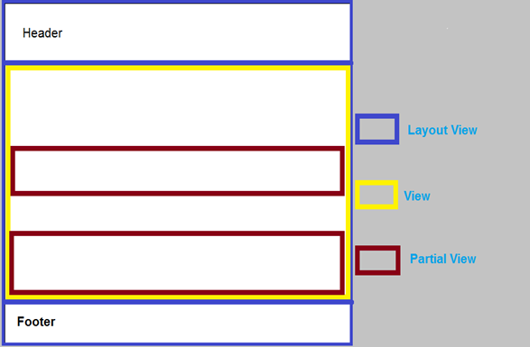

<!doctype html>
<html>
<head>
    <meta charset="utf-8">
    <meta name="viewport" content="width=device-width, initial-scale=1.0, maximum-scale=1.0, user-scalable=no">
    <link rel="stylesheet" href="reveal/css/reveal.css">
    <link rel="stylesheet" href="reveal/css/theme/kontur-light.css" id="theme">
    <!-- Theme used for syntax highlighting of code -->
    <link rel="stylesheet" href="reveal/css/highlight/idea-for-light.css">
    <link rel="stylesheet" href="reveal/css/highlight/darkula-for-dark.css">
    <!--[if lt IE 9]>
    <script src="reveal/js/html5shiv.js"></script>
    <![endif]-->
    <script defer src="reveal/js/head.min.js"></script>
    <script defer src="reveal/js/reveal.js"></script>
    <script defer src="reveal/initialize.js"></script>
    <script defer src="reveal/js/d3.min.js"></script>

    <style>
        .slides .center {
	          text-align: center;
        }

        .slides .right {
	          text-align: right;
        }
    </style>

    <title>Auth</title>
</head>
<body>

<div class="reveal"><div class="slides">

<section data-markdown><script type="text/template">

# Auth

<p class="center"><a href="https://github.com/kontur-courses/web-photo">https://github.com/kontur-courses/<b>web-photo</b></a></p>

</script></section>


<section data-markdown><script type="text/template">

## Обзор приложения

***

В основе шаблон MVC без аутентификации
```
dotnet new mvc
```

***

### Program.cs
- Создает host, подготавливает DB, запускает host

***

### Startup.cs
- Сконфигурирован автомаппер

***

### Конфигурация и обработка ошибок

- Configuration на основе appsettings.json
- Подключено логирование
- Обработка ошибок:
  - UseStatusCodePagesWithRedirects
  - UseExceptionHandler
  - ErrorController

***

### HTTPS и HSTS

- UseHttpsRedirection
- UseHsts
- Настройки запуска в launchSettings.json

***

### Routing

- MapRoute

***

### Views

- На примере PhotoController.Index
- Сопоставление Action и View
- `if`, `foreach`, `<text>`, `@{}`, `@()`
- tag helpers

***

### Структура Views

<p></p>

***

### Структура Views

- Partial
- Layout
- _Viewimport
- _ViewStart, 
- Shared
- Areas

***

### Загрузка картинок

- AddPhoto.cshtml
- AddPhoto в PhotoController

***

### Entity Framework Core

- Конфигурирование в Startup
- sqlite
- DbContext
- Repository
- LINQ

***

### Миграции и обновление БД

- `dotnet ef migrations add Photos --context PhotosDbContext`
- Папка Migrations
- `dotnet ef database update --context PhotosDbContext`
- `dbContext.Database.Migrate()`
- Seed data на примере Photos

***

### Просмотр Sqlite

Online Browser https://sqliteonline.com/

***

### Задача 1. Запуск

</script></section>


<section data-markdown><script type="text/template">

## Про аутентификацию и авторизацию

***

- Зачем надо?
- Аутентификация
- Авторизация
- Способы передачи и хранения?
- Сессия

</script></section>


<section data-markdown><script type="text/template">

## Identity

***

### Задача 2.1. Scaffolding
### Задача 2.2. Авторизация

***

### Демо. Razor Pages

</script></section>


<section data-markdown><script type="text/template">

## Пароли и сессии

***

### Задача 3.1. Пароли
### Задача 3.2. Сессии

</script></section>


<section data-markdown><script type="text/template">

## Роли и политики

***

### Задача 4.1. Роли
### Задача 4.2. Политики
### Задача 4.3. Обработчик для требования

</script></section>


<section data-markdown><script type="text/template">

## Внешние провайдеры

***

### Задача 5. Аутентификация через Google

</script></section>


<section data-markdown><script type="text/template">

## Отправка писем

***

### Задача 6. Письма

</script></section>


<section data-markdown><script type="text/template">


## Вопросы?


</script></section>


</div></div>
</body>
</html>
